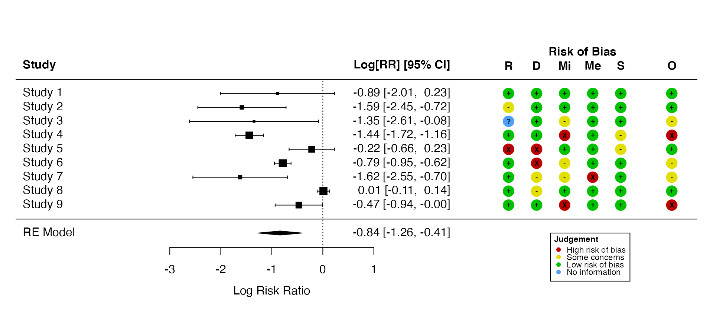
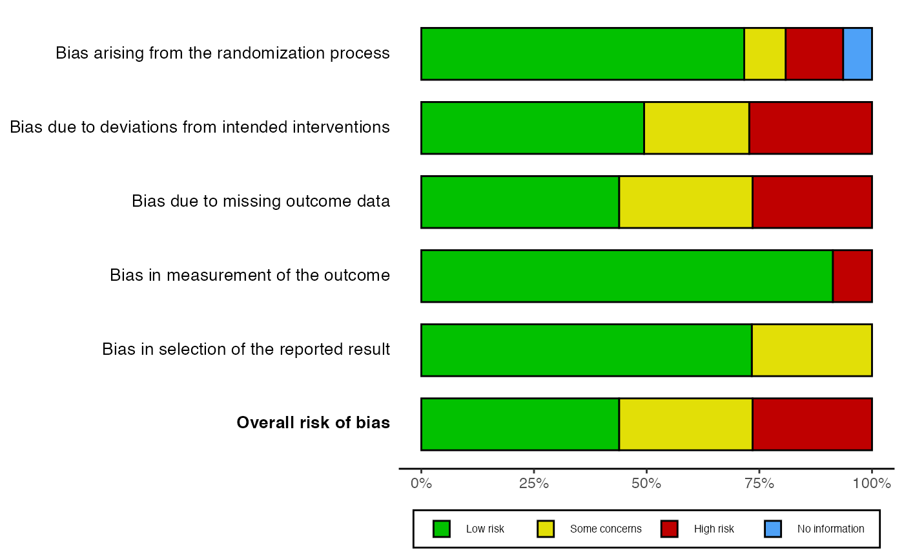
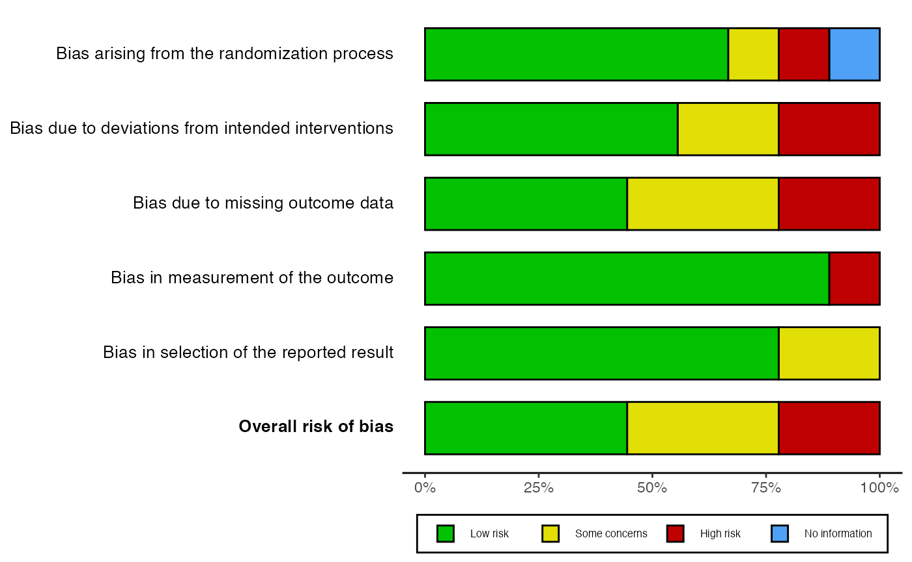

robvis now provides some functionality to work with the results of meta-analyses performed using the metafor package.
First let’s load the relevant packages and define our datasets:
library(robvis)
library(metafor)
# Define your studies, using nine studies from the of the BCG dataset included in the metafor package
data_bcg <- metafor::dat.bcg[c(1:9),]
data_bcg
#> trial author year tpos tneg cpos cneg ablat alloc
#> 1 1 Aronson 1948 4 119 11 128 44 random
#> 2 2 Ferguson & Simes 1949 6 300 29 274 55 random
#> 3 3 Rosenthal et al 1960 3 228 11 209 42 random
#> 4 4 Hart & Sutherland 1977 62 13536 248 12619 52 random
#> 5 5 Frimodt-Moller et al 1973 33 5036 47 5761 13 alternate
#> 6 6 Stein & Aronson 1953 180 1361 372 1079 44 alternate
#> 7 7 Vandiviere et al 1973 8 2537 10 619 19 random
#> 8 8 TPT Madras 1980 505 87886 499 87892 13 random
#> 9 9 Coetzee & Berjak 1968 29 7470 45 7232 27 random
# Import the example RoB2 dataset included with robvis
data_rob <- robvis::data_rob2
data_rob
#> Study D1 D2 D3 D4 D5
#> 1 Study 1 Low Low Low Low Low
#> 2 Study 2 Some concerns Low Low Low Low
#> 3 Study 3 No information Low Some concerns Low Low
#> 4 Study 4 Low Low High Low Some concerns
#> 5 Study 5 High High Low Low Some concerns
#> 6 Study 6 Low High Some concerns Low Low
#> 7 Study 7 Low Some concerns Some concerns High Low
#> 8 Study 8 Low Some concerns Low Low Low
#> 9 Study 9 Low Low High Low Low
#> Overall
#> 1 Low
#> 2 Low
#> 3 Some concerns
#> 4 High
#> 5 Low
#> 6 Some concerns
#> 7 Some concerns
#> 8 Low
#> 9 HighLet’s now perform a simple random-effects meta-analysis using metafor::rma():
# Calculate effect estimates and sampling variances for each study
data_bcg <-
metafor::escalc(
measure = "RR",
ai = tpos,
bi = tneg,
ci = cpos,
di = cneg,
data = data_bcg
)
# Perform the meta-analysis
res <- metafor::rma(yi,
vi,
data = data_bcg,
slab = paste("Study", 1:9))
# Explore the results
res
#>
#> Random-Effects Model (k = 9; tau^2 estimator: REML)
#>
#> tau^2 (estimated amount of total heterogeneity): 0.3177 (SE = 0.2068)
#> tau (square root of estimated tau^2 value): 0.5636
#> I^2 (total heterogeneity / total variability): 92.78%
#> H^2 (total variability / sampling variability): 13.85
#>
#> Test for Heterogeneity:
#> Q(df = 8) = 135.6025, p-val < .0001
#>
#> Model Results:
#>
#> estimate se zval pval ci.lb ci.ub
#> -0.8380 0.2169 -3.8635 0.0001 -1.2631 -0.4129 ***
#>
#> ---
#> Signif. codes: 0 '***' 0.001 '**' 0.01 '*' 0.05 '.' 0.1 ' ' 1Note, it is important that the slab variable defined in metafor::rma() above and the Study variable of the risk-of-bias dataset are identical, as the data is merged on the basis of these variables in the next section. Here I have just used “Study 1” -> “Study 9”, but another good option is author name and year:
data_rob$Study
#> [1] "Study 1" "Study 2" "Study 3" "Study 4" "Study 5" "Study 6" "Study 7"
#> [8] "Study 8" "Study 9"
res$slab
#> [1] "Study 1" "Study 2" "Study 3" "Study 4" "Study 5" "Study 6" "Study 7"
#> [8] "Study 8" "Study 9"Having performed the meta-analysis, you can now append a risk-of-bias traffic-light plot onto the standard output from metafor::forest() by passing the results object (res) and the risk-of-bias dataset (data_rob) to rob_append_to_forest():
rob_append_to_forest(res, data_rob)
#> We recommend copying the description below into your figure caption:
#>
#> "Risk-of-bias assessement was performed using the ROB2 tool, which has the following domains: R: Bias arising from the randomization process. D: Bias due to deviations from intended intervention. Mi: Bias due to missing outcome data. Me: Bias in measurement of the outcome. S: Bias in selection of the reported result. O: Overall risk of bias"
Alternatively, you can extract the weights assigned to each study in the meta-analysis and append them to the risk-of-bias dataset. This weighted risk-of-bias dataset can then be passed to rob_summary() where the weighted argument is set to TRUE to produce summary plots which show the amount of statistical information, rather than the number of studies, that is at each level of risk of bias.
# Extract the weights assigned to each study from the meta-analysis and append them to the risk-of-bias dataset
data_rob <- rob_append_weights(data_rob, res)
# Pass this weighted dataset to the rob_summary() function, and set weighted = TRUE
rob_summary(data_rob, tool = "ROB2", weighted = TRUE)
# Compare this to the un-weighted bar plots (weighted = FALSE)
rob_summary(data_rob, tool = "ROB2", weighted = FALSE)